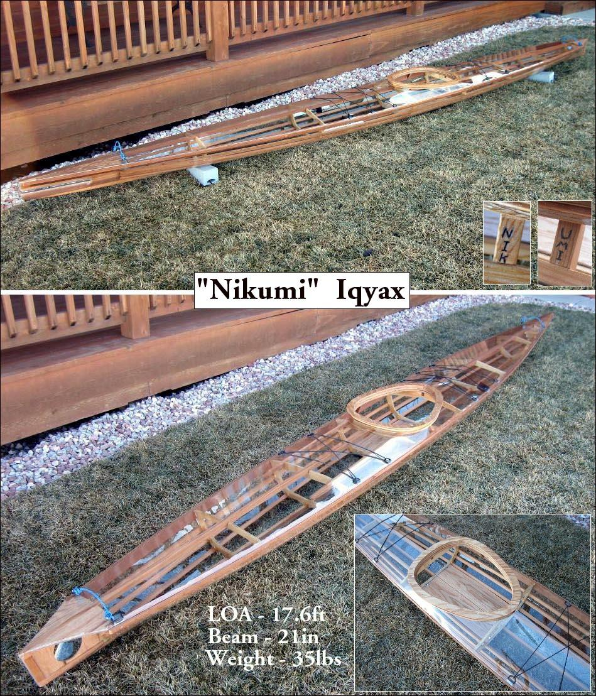

| Nikumi Offsets / Drawings / Construction Pics ( 16 pages ) | Menu Previous Page Next Page |
|

The non-folding wood frame "Nikumi" is a multi-chine Baidarka. The skin is 20mil clear vinyl. The next several pages display Offsets, drawings, and construction pics of the "Nikumi" and "Nikumi 19" Iqyax / Baidarka.
|
|